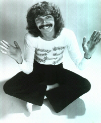
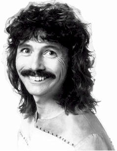

|
Doug HenningDoug Henning (May 3, 1947 - February 7, 2000)
He took the money and promptly fled Canada. After moving to Los Angeles, he put together The Magic Show. It opened on Broadway and ran for over four years. The show combined rainbows, rock music, elaborate sets, flashy illusions, and inappropriately homosexual costumes. He choreographed magical effects for The Jacksons, appeared on The Tonight Show, and performed at the White House. Each of Henning's fingers was insured for $300,000 apiece. This was during a period in American history when traditional "magicians" as a collective group were going through extremely lean times, working occasional nightclub acts or sandwiched between comedians and accordion players. The Magic Show was translated into an annual TV spectacular, The World of Magic. Millions of viewers tuned in to watch Henning make elephants disappear, or transform beautiful women into Michael Landon. In one unscripted moment, a Bengal tiger escaped backstage and chased talk show host Tom Snyder into the men's toilet. Straight-laced American viewers grew concerned when each and every episode of The World of Magic ended with an identical intonation delivered by Henning: "Anything the mind can conceive is possible. Nothing is impossible. All you have to do is look within and you can realize your fondest dreams. I would like to wish each one of you all of life's wonders and a joyful age of enlightenment."
His platform included employing 10,000 flying yogis who would meditate to cure Canada's problems. They would create a "unified field," as part of the "Maharishi effect" - something he claimed was responsible for bringing down the Berlin Wall, helping stock markets to rise, and cutting the crime rate. He stated, "If I can make an elephant disappear, I can make the deficit disappear." Henning's bid for office earned 839 votes out of a total of 55,298 cast. Increasingly branded a kook in the world press, Henning focused his efforts at opening a theme park called Veda Land, a possible joint effort between the Henning empire and Disney. It would a $1.5 billion project, to be located in one of three places: (a) the Canadian wilderness, (b) Niagara Falls, or (c) the middle of Iowa. Comparisons to Jim Bakker's failed Christian theme park Heritage USA were drawn, to which Henning responded, "No - it's more like - wow, isn't enlightenment great?" Henning died of liver cancer at age 52. |
 Douglas James
Henning, the world's premiere disco hippie magician. His most astonishing trick
ever was convincing the Canadian government to fork over grant money so he could
revive magic tricks within a focused, theatrical venue. A teenager in the sixties,
Henning was far too young to perform in Las Vegas.
Douglas James
Henning, the world's premiere disco hippie magician. His most astonishing trick
ever was convincing the Canadian government to fork over grant money so he could
revive magic tricks within a focused, theatrical venue. A teenager in the sixties,
Henning was far too young to perform in Las Vegas. This
hackneyed signoff was all part of Henning's master plan. He was deeply committed
to Transcendental Meditation, the seventies equivalent of yoga or Pilates. He
sold his magic props, auctioned off his costumes, and traveled to India to "study"
with the
This
hackneyed signoff was all part of Henning's master plan. He was deeply committed
to Transcendental Meditation, the seventies equivalent of yoga or Pilates. He
sold his magic props, auctioned off his costumes, and traveled to India to "study"
with the